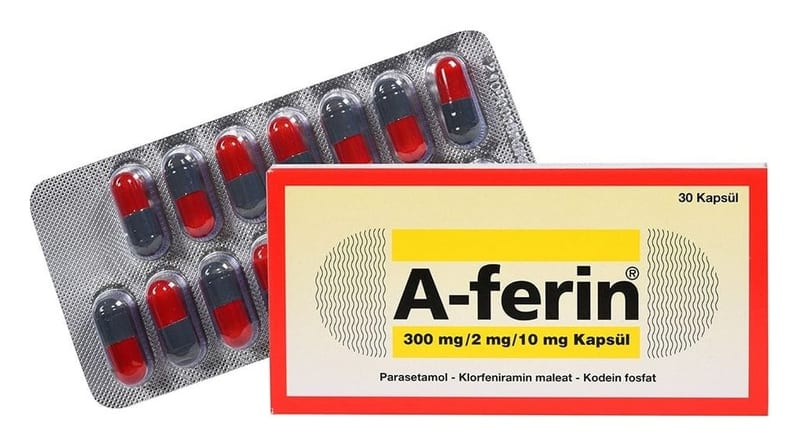

A-Ferin 300 mg/2 mg/10 mg Kapsül, 1000 Adet

Ne için kullanılır
KT · Bölüm 1Her kapsül 300 mg parasetamol, 2 mg klorfeniramin maleat, 10 mg kodein fosfat içerir.
A-FERİN kapsül 20-30 kapsül içeren blister ambalajlarda kullanıma sunulmuştur.
Grip ve soğuk algınlığına bağlı burun akıntısı, aksırma, burun ve boğazda kaşıntı, baş ağrısı, adale ağrısı, boğaz ağrısı, vücut kırıklığı, ateş, nezle, gözlerde sulanma ve kaşıntı gibi durumlara eşlik eden kuru öksürüğün tedavisinde kullanılır.